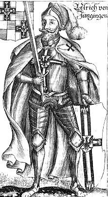

Ulrich von Jungingen¶
Relations
Antagonist of: III · Žaliasis Miškas — mortal, killed
Enemy: Vytautas (1407–1410)
Patrons: Geležinis Šventasis (Ferrum Sanctum) (1407–1410)
Practises: Iron Saint’s fearlessness (1407–…) — tier 3
Rules: Teutonic Order (1407–1410)
Sibling: Konrad von Jungingen (Grand Master 1393-1407)
Took part in: Battle of Grunwald / Žalgiris
Ulrich von Jungingen

Ulrich von Jungingen · character — Image: Christoph Hartknoch, Public domain via Wikimedia Commons¶

Type |
character |
Years |
1360–1410 |
Status |
Historical record |
Note |
Ulrich von Jungingen, Grand Master of the Teutonic Order (1407–1410); killed at the Battle of Grunwald. |
Summary¶
Ulrich von Jungingen (1360 - 15 July 1410), the 26th Grand Master of the Teutonic Order (elected 26 June 1407), is the mortal Antagonist of Book III: brave, proud, convinced, “the last true believer of the knightly Order”. Unlike his cautious brother Konrad, he wants one decisive battle against the “pagan-Polish hydra”. The saga lets him speak flawless Lithuanian, learned from the enemy, and shows him as a man who does not fear. He leads sixteen white banners into the field at Grunwald and dies fighting, refusing to flee.
Appearance & tells¶
A mountain of a man: tall, broad-boned and wide-shouldered, with light straight hair and a face the brothers call the “holy machine”, a smooth face that carries the one emotion he allows himself (Book II ch. 30, about forty in 1399). His white mantle with the black cross is always immaculate, even in battle. He speaks Lithuanian cleanly and without accent (Book III ch. 6). At Grunwald he is about fifty, without helmet, standing on a pile of dead with a broken sword while dozens of men swirl round him “like water round a rock” (ch. 20). Tells: he asks for a lantern before descending into the Marienburg vaults, and does not flinch at the heat in the walls (ch. 11).
Want · Need · Lie · Truth¶
Want (external) |
To finish the Order’s mission: to claim the Wild Lands for Christ and to prove the German knights superior to the “Eastern rabble” by a single decisive battle. |
Need (internal) |
To doubt: to learn pity, the thing the Iron Saint’s gift takes from him. |
Lie they believe |
That the Order is invincible and favoured by the Virgin, and that fearlessness is a virtue. |
Truth they learn (or refuse) |
He does not learn it. He dies on the field, and Jogaila covers his body in purple (record; Book III ch. 22). |
Arc by book¶
Book II (Dec 1399): at the Marienburg window he hears the frozen Nogat sing, as the brothers sing Salve Regina, and tells his brother Konrad of the map of a Samogitia that is theirs on paper: “Next time we finish them.” (ch. 30; also ch. 19 mention).
Book III (1404-1410): at Raciąż he stands at the church door and tells Vytautas in clean Lithuanian that he swears beautifully, and that he is waiting (ch. 6, 1404); is named in Henė’s offer (“Ulrich will die in his bed, in agony”, ch. 8) which time contradicts; is elected the Sunday after Konrad’s death and descends into the warm Marienburg vaults without a flinch (ch. 11, 1407); sends the two swords before the battle (ch. 18); leads sixteen banners at Grunwald and dies (ch. 20, 15 July 1410); his body is brought to Marienburg two days later (ch. 22).
Power & magic¶
Tier 0, with the Iron Saint’s gift: fearlessness and tireless marching at the price of pity. His patron is Geležinis Šventasis, who stands on the field in person behind him at Grunwald. The cost shows as the missing doubt: the walls of Marienburg sweat with heat that he alone does not mind. His death does not end the Force; the Order survives as an ordinary state (Book III ch. 22).
Record vs saga¶
[Historical record]: Born 1360; komtur of Balga 1396-1404; Grand Marshal from 1404; Grand Master from 26 June 1407 after his brother Konrad died on 30 March 1407; killed on 15 July 1410 at Grunwald (Tannenberg), where about 203-211 of c. 270 brothers died too. Długosz says he fell to a blow from Mszczuj of Skrzynno; the Cronica conflictus names Dobiesław of Oleśnica. Before the battle, two heralds brought two swords to Jogaila and Vytautas (Długosz). His body was taken to Marienburg; Długosz says that Jogaila wept over it and had it covered in purple. See Wikipedia.
[The saga’s invention]: His Lithuanian conversation with Vytautas at Raciąż (ch. 6) and the Iron Saint behind him on the field; the Marienburg cellar scene (ch. 11); Henė’s prophecy. The record establishes the dates, the swords, and the death in the field; the saga picks no killer.
Pronunciation¶
UL-rich fon JUN-gin-gen (/ˈʊlʁɪç fɔn ˈjʊŋɪŋən/), English respelling OOL-rikh fon YOONG-ing-en; in Lithuanian text Ulrichas fon Jungingenas.
Appearances¶
Book II: ch. 19, 30 (the Marienburg epilogue) and the afterword. Book III: ch. 6, 8, 11, 12, 18, 19, 20 (Geležies Mirtis), 22 and the afterword. His brother Konrad von Jungingen (Grand Master 1393-1407) is also named in Book II ch. 19.
Timeline¶
Year |
Event |
Book |
|---|---|---|
1410-07-15 |
III · Žaliasis Miškas |
Connections¶
graph LR
book3["III · Žaliasis Miškas"]
ev_grunwald["Battle of Grunwald / Žalgiris"]
iron_gift["Iron Saint's fearlessness"]
iron_saint["Geležinis Šventasis (Ferrum Sanctum)"]
jungingen["Ulrich von Jungingen"]
konrad_jungingen["Konrad von Jungingen (Grand Master 1393-1407)"]
teutonic_order["Teutonic Order"]
vytautas["Vytautas"]
jungingen -->|Rules| teutonic_order
jungingen -->|Practises| iron_gift
jungingen -->|Took part in| ev_grunwald
jungingen -->|Antagonist of| book3
vytautas -->|Enemy| jungingen
iron_saint -->|Patron of| jungingen
konrad_jungingen -->|Sibling| jungingen
style jungingen stroke-width:3px